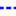

<!doctype html>
<html lang="en">
    <head>
        <meta charset="utf-8">
        <meta http-equiv="X-UA-Compatible" content="IE=edge">
        <meta name="viewport" content="initial-scale=1,user-scalable=no,maximum-scale=1,width=device-width">
        <meta name="mobile-web-app-capable" content="yes">
        <meta name="apple-mobile-web-app-capable" content="yes">
        <link rel="stylesheet" href="css/leaflet.css">
        <link rel="stylesheet" href="css/L.Control.Layers.Tree.css">
        <link rel="stylesheet" href="css/qgis2web.css">
        <link rel="stylesheet" href="css/fontawesome-all.min.css">
        <link rel="stylesheet" href="css/leaflet.photon.css">
        <style>
        html, body, #map {
            width: 100%;
            height: 100%;
            padding: 0;
            margin: 0;
        }
        </style>
        <title></title>
    </head>
    <body>
        <div id="map">
        </div>
        <script src="js/qgis2web_expressions.js"></script>
        <script src="js/leaflet.js"></script>
        <script src="js/L.Control.Layers.Tree.min.js"></script>
        <script src="js/leaflet.rotatedMarker.js"></script>
        <script src="js/leaflet.pattern.js"></script>
        <script src="js/leaflet-hash.js"></script>
        <script src="js/Autolinker.min.js"></script>
        <script src="js/rbush.min.js"></script>
        <script src="js/labelgun.min.js"></script>
        <script src="js/labels.js"></script>
        <script src="js/leaflet.wms.js"></script>
        <script src="js/leaflet.photon.js"></script>
        <script src="data/KpSamferdselLinje_1.js"></script>
        <script src="data/KpPskrift_text_2.js"></script>
        <script src="data/KpJuridiskLinje_3.js"></script>
        <script>
        var map = L.map('map', {
            zoomControl:false, maxZoom:28, minZoom:1
        }).fitBounds([[62.48707439551928,6.079971183018621],[62.52157288606551,6.195350936666433]]);
        var hash = new L.Hash(map);
        map.attributionControl.setPrefix('<a href="https://github.com/qgis2web/qgis2web" target="_blank">qgis2web</a> &middot; <a href="https://leafletjs.com" title="A JS library for interactive maps">Leaflet</a> &middot; <a href="https://qgis.org">QGIS</a>');
        var autolinker = new Autolinker({truncate: {length: 30, location: 'smart'}});
        // remove popup's row if "visible-with-data"
        function removeEmptyRowsFromPopupContent(content, feature) {
         var tempDiv = document.createElement('div');
         tempDiv.innerHTML = content;
         var rows = tempDiv.querySelectorAll('tr');
         for (var i = 0; i < rows.length; i++) {
             var td = rows[i].querySelector('td.visible-with-data');
             var key = td ? td.id : '';
             if (td && td.classList.contains('visible-with-data') && feature.properties[key] == null) {
                 rows[i].parentNode.removeChild(rows[i]);
             }
         }
         return tempDiv.innerHTML;
        }
        // modify popup if contains media
        function addClassToPopupIfMedia(content, popup) {
            var tempDiv = document.createElement('div');
            tempDiv.innerHTML = content;
            var imgTd = tempDiv.querySelector('td img');
            if (imgTd) {
                var src = imgTd.getAttribute('src');
                if (/\.(jpg|jpeg|png|gif|bmp|webp|avif)$/i.test(src)) {
                    popup._contentNode.classList.add('media');
                    setTimeout(function() {
                        popup.update();
                    }, 10);
                } else if (/\.(mp3|wav|ogg|aac)$/i.test(src)) {
                    var audio = document.createElement('audio');
                    audio.controls = true;
                    audio.src = src;
                    imgTd.parentNode.replaceChild(audio, imgTd);
                    popup._contentNode.classList.add('media');
                    setTimeout(function() {
                        popup.setContent(tempDiv.innerHTML);
                        popup.update();
                    }, 10);
                } else if (/\.(mp4|webm|ogg|mov)$/i.test(src)) {
                    var video = document.createElement('video');
                    video.controls = true;
                    video.src = src;
                    video.style.width = "400px";
                    video.style.height = "300px";
                    video.style.maxHeight = "60vh";
                    video.style.maxWidth = "60vw";
                    imgTd.parentNode.replaceChild(video, imgTd);
                    popup._contentNode.classList.add('media');
                    // Aggiorna il popup quando il video carica i metadati
                    video.addEventListener('loadedmetadata', function() {
                        popup.update();
                    });
                    setTimeout(function() {
                        popup.setContent(tempDiv.innerHTML);
                        popup.update();
                    }, 10);
                } else {
                    popup._contentNode.classList.remove('media');
                }
            } else {
                popup._contentNode.classList.remove('media');
            }
        }
        var zoomControl = L.control.zoom({
            position: 'topleft'
        }).addTo(map);
        var bounds_group = new L.featureGroup([]);
        function setBounds() {
        }
        map.createPane('pane_Topografisknorgeskartgrtone_0');
        map.getPane('pane_Topografisknorgeskartgrtone_0').style.zIndex = 400;
        var layer_Topografisknorgeskartgrtone_0 = L.WMS.layer("https://wms.geonorge.no/skwms1/wms.topograatone", "topograatone", {
            pane: 'pane_Topografisknorgeskartgrtone_0',
            format: 'image/png',
            uppercase: true,
            transparent: true,
            continuousWorld : true,
            tiled: true,
            info_format: 'text/html',
            opacity: 1,
            identify: false,
            attribution: '',
        });
        map.addLayer(layer_Topografisknorgeskartgrtone_0);
        function pop_KpSamferdselLinje_1(feature, layer) {
            var popupContent = '<table>\
                    <tr>\
                        <td colspan="2">' + (feature.properties['AREALST'] !== null ? autolinker.link(String(feature.properties['AREALST']).replace(/'/g, '\'').toLocaleString()) : '') + '</td>\
                    </tr>\
                    <tr>\
                        <td colspan="2">' + (feature.properties['FØRSTEDIGI'] !== null ? autolinker.link(String(feature.properties['FØRSTEDIGI']).replace(/'/g, '\'').toLocaleString()) : '') + '</td>\
                    </tr>\
                    <tr>\
                        <td colspan="2">' + (feature.properties['IDENT_LOKA'] !== null ? autolinker.link(String(feature.properties['IDENT_LOKA']).replace(/'/g, '\'').toLocaleString()) : '') + '</td>\
                    </tr>\
                    <tr>\
                        <td colspan="2">' + (feature.properties['IDENT_NAVN'] !== null ? autolinker.link(String(feature.properties['IDENT_NAVN']).replace(/'/g, '\'').toLocaleString()) : '') + '</td>\
                    </tr>\
                    <tr>\
                        <td colspan="2">' + (feature.properties['KVALITET_M'] !== null ? autolinker.link(String(feature.properties['KVALITET_M']).replace(/'/g, '\'').toLocaleString()) : '') + '</td>\
                    </tr>\
                    <tr>\
                        <td colspan="2">' + (feature.properties['KVALITET_N'] !== null ? autolinker.link(String(feature.properties['KVALITET_N']).replace(/'/g, '\'').toLocaleString()) : '') + '</td>\
                    </tr>\
                    <tr>\
                        <td colspan="2">' + (feature.properties['NASJONALAR'] !== null ? autolinker.link(String(feature.properties['NASJONALAR']).replace(/'/g, '\'').toLocaleString()) : '') + '</td>\
                    </tr>\
                    <tr>\
                        <td colspan="2">' + (feature.properties['NASJONAL00'] !== null ? autolinker.link(String(feature.properties['NASJONAL00']).replace(/'/g, '\'').toLocaleString()) : '') + '</td>\
                    </tr>\
                    <tr>\
                        <td colspan="2">' + (feature.properties['TYPESAMFLI'] !== null ? autolinker.link(String(feature.properties['TYPESAMFLI']).replace(/'/g, '\'').toLocaleString()) : '') + '</td>\
                    </tr>\
                    <tr>\
                        <td colspan="2">' + (feature.properties['VERTNIV'] !== null ? autolinker.link(String(feature.properties['VERTNIV']).replace(/'/g, '\'').toLocaleString()) : '') + '</td>\
                    </tr>\
                    <tr>\
                        <td colspan="2">' + (feature.properties['fme_basena'] !== null ? autolinker.link(String(feature.properties['fme_basena']).replace(/'/g, '\'').toLocaleString()) : '') + '</td>\
                    </tr>\
                    <tr>\
                        <td colspan="2">' + (feature.properties['fme_datase'] !== null ? autolinker.link(String(feature.properties['fme_datase']).replace(/'/g, '\'').toLocaleString()) : '') + '</td>\
                    </tr>\
                    <tr>\
                        <td colspan="2">' + (feature.properties['LENGDE'] !== null ? autolinker.link(String(feature.properties['LENGDE']).replace(/'/g, '\'').toLocaleString()) : '') + '</td>\
                    </tr>\
                </table>';
            var content = removeEmptyRowsFromPopupContent(popupContent, feature);
			layer.on('popupopen', function(e) {
				addClassToPopupIfMedia(content, e.popup);
			});
			layer.bindPopup(content, { maxHeight: 400 });
        }

        function style_KpSamferdselLinje_1_0(feature) {
            switch(String(feature.properties['TYPESAMFLI'])) {
                case '1122':
                    return {
                pane: 'pane_KpSamferdselLinje_1',
                opacity: 1,
                color: 'rgba(183,19,57,1.0)',
                dashArray: '',
                lineCap: 'round',
                lineJoin: 'round',
                weight: 3.0,
                fillOpacity: 0,
                interactive: true,
            }
                    break;
                case '1124':
                    return {
                pane: 'pane_KpSamferdselLinje_1',
                opacity: 1,
                color: 'rgba(255,127,0,1.0)',
                dashArray: '',
                lineCap: 'round',
                lineJoin: 'round',
                weight: 3.0,
                fillOpacity: 0,
                interactive: true,
            }
                    break;
                case '1130':
                    return {
                pane: 'pane_KpSamferdselLinje_1',
                opacity: 1,
                color: 'rgba(202,42,217,1.0)',
                dashArray: '',
                lineCap: 'round',
                lineJoin: 'round',
                weight: 3.0,
                fillOpacity: 0,
                interactive: true,
            }
                    break;
                case '1132':
                    return {
                pane: 'pane_KpSamferdselLinje_1',
                opacity: 1,
                color: 'rgba(228,138,216,1.0)',
                dashArray: '',
                lineCap: 'round',
                lineJoin: 'round',
                weight: 3.0,
                fillOpacity: 0,
                interactive: true,
            }
                    break;
                case '1140':
                    return {
                pane: 'pane_KpSamferdselLinje_1',
                opacity: 1,
                color: 'rgba(51,160,44,1.0)',
                dashArray: '',
                lineCap: 'round',
                lineJoin: 'round',
                weight: 3.0,
                fillOpacity: 0,
                interactive: true,
            }
                    break;
            }
        }
        map.createPane('pane_KpSamferdselLinje_1');
        map.getPane('pane_KpSamferdselLinje_1').style.zIndex = 401;
        map.getPane('pane_KpSamferdselLinje_1').style['mix-blend-mode'] = 'normal';
        var layer_KpSamferdselLinje_1 = new L.geoJson(json_KpSamferdselLinje_1, {
            attribution: '',
            interactive: true,
            dataVar: 'json_KpSamferdselLinje_1',
            layerName: 'layer_KpSamferdselLinje_1',
            pane: 'pane_KpSamferdselLinje_1',
            onEachFeature: pop_KpSamferdselLinje_1,
            style: style_KpSamferdselLinje_1_0,
        });
        bounds_group.addLayer(layer_KpSamferdselLinje_1);
        map.addLayer(layer_KpSamferdselLinje_1);
        function pop_KpPskrift_text_2(feature, layer) {
            var popupContent = '<table>\
                    <tr>\
                        <td colspan="2">' + (feature.properties['FØRSTEDIGI'] !== null ? autolinker.link(String(feature.properties['FØRSTEDIGI']).replace(/'/g, '\'').toLocaleString()) : '') + '</td>\
                    </tr>\
                    <tr>\
                        <td colspan="2">' + (feature.properties['IDENT_LOKA'] !== null ? autolinker.link(String(feature.properties['IDENT_LOKA']).replace(/'/g, '\'').toLocaleString()) : '') + '</td>\
                    </tr>\
                    <tr>\
                        <td colspan="2">' + (feature.properties['IDENT_NAVN'] !== null ? autolinker.link(String(feature.properties['IDENT_NAVN']).replace(/'/g, '\'').toLocaleString()) : '') + '</td>\
                    </tr>\
                    <tr>\
                        <td colspan="2">' + (feature.properties['KVALITET_M'] !== null ? autolinker.link(String(feature.properties['KVALITET_M']).replace(/'/g, '\'').toLocaleString()) : '') + '</td>\
                    </tr>\
                    <tr>\
                        <td colspan="2">' + (feature.properties['KVALITET_N'] !== null ? autolinker.link(String(feature.properties['KVALITET_N']).replace(/'/g, '\'').toLocaleString()) : '') + '</td>\
                    </tr>\
                    <tr>\
                        <td colspan="2">' + (feature.properties['NASJONALAR'] !== null ? autolinker.link(String(feature.properties['NASJONALAR']).replace(/'/g, '\'').toLocaleString()) : '') + '</td>\
                    </tr>\
                    <tr>\
                        <td colspan="2">' + (feature.properties['NASJONAL00'] !== null ? autolinker.link(String(feature.properties['NASJONAL00']).replace(/'/g, '\'').toLocaleString()) : '') + '</td>\
                    </tr>\
                    <tr>\
                        <td colspan="2">' + (feature.properties['PLANPÅSKRI'] !== null ? autolinker.link(String(feature.properties['PLANPÅSKRI']).replace(/'/g, '\'').toLocaleString()) : '') + '</td>\
                    </tr>\
                    <tr>\
                        <td colspan="2">' + (feature.properties['STRENG'] !== null ? autolinker.link(String(feature.properties['STRENG']).replace(/'/g, '\'').toLocaleString()) : '') + '</td>\
                    </tr>\
                    <tr>\
                        <td colspan="2">' + (feature.properties['fme_basena'] !== null ? autolinker.link(String(feature.properties['fme_basena']).replace(/'/g, '\'').toLocaleString()) : '') + '</td>\
                    </tr>\
                    <tr>\
                        <td colspan="2">' + (feature.properties['fme_datase'] !== null ? autolinker.link(String(feature.properties['fme_datase']).replace(/'/g, '\'').toLocaleString()) : '') + '</td>\
                    </tr>\
                    <tr>\
                        <td colspan="2">' + (feature.properties['_original_'] !== null ? autolinker.link(String(feature.properties['_original_']).replace(/'/g, '\'').toLocaleString()) : '') + '</td>\
                    </tr>\
                    <tr>\
                        <td colspan="2">' + (feature.properties['X'] !== null ? autolinker.link(String(feature.properties['X']).replace(/'/g, '\'').toLocaleString()) : '') + '</td>\
                    </tr>\
                    <tr>\
                        <td colspan="2">' + (feature.properties['Y'] !== null ? autolinker.link(String(feature.properties['Y']).replace(/'/g, '\'').toLocaleString()) : '') + '</td>\
                    </tr>\
                    <tr>\
                        <td colspan="2">' + (feature.properties['Z'] !== null ? autolinker.link(String(feature.properties['Z']).replace(/'/g, '\'').toLocaleString()) : '') + '</td>\
                    </tr>\
                    <tr>\
                        <td colspan="2">' + (feature.properties['TEXTSTRING'] !== null ? autolinker.link(String(feature.properties['TEXTSTRING']).replace(/'/g, '\'').toLocaleString()) : '') + '</td>\
                    </tr>\
                    <tr>\
                        <td colspan="2">' + (feature.properties['TEXT_ANGLE'] !== null ? autolinker.link(String(feature.properties['TEXT_ANGLE']).replace(/'/g, '\'').toLocaleString()) : '') + '</td>\
                    </tr>\
                    <tr>\
                        <td colspan="2">' + (feature.properties['TEXT_SIZE'] !== null ? autolinker.link(String(feature.properties['TEXT_SIZE']).replace(/'/g, '\'').toLocaleString()) : '') + '</td>\
                    </tr>\
                </table>';
            var content = removeEmptyRowsFromPopupContent(popupContent, feature);
			layer.on('popupopen', function(e) {
				addClassToPopupIfMedia(content, e.popup);
			});
			layer.bindPopup(content, { maxHeight: 400 });
        }

        function style_KpPskrift_text_2_0() {
            return {
                pane: 'pane_KpPskrift_text_2',
                radius: 2.8,
                opacity: 1,
                color: 'rgba(35,35,35,1.0)',
                dashArray: '',
                lineCap: 'butt',
                lineJoin: 'miter',
                weight: 1,
                fill: true,
                fillOpacity: 1,
                fillColor: 'rgba(92,85,85,1.0)',
                interactive: true,
            }
        }
        map.createPane('pane_KpPskrift_text_2');
        map.getPane('pane_KpPskrift_text_2').style.zIndex = 402;
        map.getPane('pane_KpPskrift_text_2').style['mix-blend-mode'] = 'normal';
        var layer_KpPskrift_text_2 = new L.geoJson(json_KpPskrift_text_2, {
            attribution: '',
            interactive: true,
            dataVar: 'json_KpPskrift_text_2',
            layerName: 'layer_KpPskrift_text_2',
            pane: 'pane_KpPskrift_text_2',
            onEachFeature: pop_KpPskrift_text_2,
            pointToLayer: function (feature, latlng) {
                var context = {
                    feature: feature,
                    variables: {}
                };
                return L.circleMarker(latlng, style_KpPskrift_text_2_0(feature));
            },
        });
        bounds_group.addLayer(layer_KpPskrift_text_2);
        map.addLayer(layer_KpPskrift_text_2);
        function pop_KpJuridiskLinje_3(feature, layer) {
            var popupContent = '<table>\
                    <tr>\
                        <td colspan="2">' + (feature.properties['FØRSTEDIGI'] !== null ? autolinker.link(String(feature.properties['FØRSTEDIGI']).replace(/'/g, '\'').toLocaleString()) : '') + '</td>\
                    </tr>\
                    <tr>\
                        <td colspan="2">' + (feature.properties['IDENT_LOKA'] !== null ? autolinker.link(String(feature.properties['IDENT_LOKA']).replace(/'/g, '\'').toLocaleString()) : '') + '</td>\
                    </tr>\
                    <tr>\
                        <td colspan="2">' + (feature.properties['IDENT_NAVN'] !== null ? autolinker.link(String(feature.properties['IDENT_NAVN']).replace(/'/g, '\'').toLocaleString()) : '') + '</td>\
                    </tr>\
                    <tr>\
                        <td colspan="2">' + (feature.properties['KPJURLINJE'] !== null ? autolinker.link(String(feature.properties['KPJURLINJE']).replace(/'/g, '\'').toLocaleString()) : '') + '</td>\
                    </tr>\
                    <tr>\
                        <td colspan="2">' + (feature.properties['KVALITET_M'] !== null ? autolinker.link(String(feature.properties['KVALITET_M']).replace(/'/g, '\'').toLocaleString()) : '') + '</td>\
                    </tr>\
                    <tr>\
                        <td colspan="2">' + (feature.properties['KVALITET_N'] !== null ? autolinker.link(String(feature.properties['KVALITET_N']).replace(/'/g, '\'').toLocaleString()) : '') + '</td>\
                    </tr>\
                    <tr>\
                        <td colspan="2">' + (feature.properties['NASJONALAR'] !== null ? autolinker.link(String(feature.properties['NASJONALAR']).replace(/'/g, '\'').toLocaleString()) : '') + '</td>\
                    </tr>\
                    <tr>\
                        <td colspan="2">' + (feature.properties['NASJONAL00'] !== null ? autolinker.link(String(feature.properties['NASJONAL00']).replace(/'/g, '\'').toLocaleString()) : '') + '</td>\
                    </tr>\
                    <tr>\
                        <td colspan="2">' + (feature.properties['fme_basena'] !== null ? autolinker.link(String(feature.properties['fme_basena']).replace(/'/g, '\'').toLocaleString()) : '') + '</td>\
                    </tr>\
                    <tr>\
                        <td colspan="2">' + (feature.properties['fme_datase'] !== null ? autolinker.link(String(feature.properties['fme_datase']).replace(/'/g, '\'').toLocaleString()) : '') + '</td>\
                    </tr>\
                    <tr>\
                        <td colspan="2">' + (feature.properties['LENGDE'] !== null ? autolinker.link(String(feature.properties['LENGDE']).replace(/'/g, '\'').toLocaleString()) : '') + '</td>\
                    </tr>\
                </table>';
            var content = removeEmptyRowsFromPopupContent(popupContent, feature);
			layer.on('popupopen', function(e) {
				addClassToPopupIfMedia(content, e.popup);
			});
			layer.bindPopup(content, { maxHeight: 400 });
        }

        function style_KpJuridiskLinje_3_0() {
            return {
                pane: 'pane_KpJuridiskLinje_3',
                opacity: 1,
                color: 'rgba(13,12,243,1.0)',
                dashArray: '3.0,6.0',
                lineCap: 'round',
                lineJoin: 'round',
                weight: 3.0,
                fillOpacity: 0,
                interactive: true,
            }
        }
        map.createPane('pane_KpJuridiskLinje_3');
        map.getPane('pane_KpJuridiskLinje_3').style.zIndex = 403;
        map.getPane('pane_KpJuridiskLinje_3').style['mix-blend-mode'] = 'normal';
        var layer_KpJuridiskLinje_3 = new L.geoJson(json_KpJuridiskLinje_3, {
            attribution: '',
            interactive: true,
            dataVar: 'json_KpJuridiskLinje_3',
            layerName: 'layer_KpJuridiskLinje_3',
            pane: 'pane_KpJuridiskLinje_3',
            onEachFeature: pop_KpJuridiskLinje_3,
            style: style_KpJuridiskLinje_3_0,
        });
        bounds_group.addLayer(layer_KpJuridiskLinje_3);
        map.addLayer(layer_KpJuridiskLinje_3);
        const url = {"Nominatim OSM": "https://nominatim.openstreetmap.org/search?format=geojson&addressdetails=1&",
        "France BAN": "https://api-adresse.data.gouv.fr/search/?"}
        var photonControl = L.control.photon({
            url: url["Nominatim OSM"],
            feedbackLabel: '',
            position: 'topleft',
            includePosition: true,
            initial: true,
            // resultsHandler: myHandler,
        }).addTo(map);
        photonControl._container.childNodes[0].style.borderRadius="10px"
        // Create a variable to store the geoJSON data
        var x = null;
        // Create a variable to store the marker
        var marker = null;
        // Add an event listener to the Photon control to create a marker from the returned geoJSON data
        var z = null;
        photonControl.on('selected', function(e) {
            console.log(photonControl.search.resultsContainer);
            if (x != null) {
                map.removeLayer(obj3.marker);
                map.removeLayer(x);
            }
            obj2.gcd = e.choice;
            x = L.geoJSON(obj2.gcd).addTo(map);
            var label = typeof obj2.gcd.properties.label === 'undefined' ? obj2.gcd.properties.display_name : obj2.gcd.properties.label;
            obj3.marker = L.marker(x.getLayers()[0].getLatLng()).bindPopup(label).addTo(map);
            map.setView(x.getLayers()[0].getLatLng(), 17);
            z = typeof e.choice.properties.label === 'undefined'? e.choice.properties.display_name : e.choice.properties.label;
            console.log(e);
            e.target.input.value = z;
        });
        var search = document.getElementsByClassName("leaflet-photon leaflet-control")[0];
        search.classList.add("leaflet-control-search")
        search.style.display = "flex";
        search.style.backgroundColor="rgba(255,255,255,0.5)" 

        // Create the new button element
        var button = document.createElement("div");
        button.id = "gcd-button-control";
        button.className = "gcd-gl-btn fa fa-search search-button";

        // Insert the button at the beginning of the search control
        search.insertBefore(button, search.firstChild);
        last = search.lastChild;
        last.style.display = "none";
        button.addEventListener("click", function (e) {
            if (last.style.display === "none") {
                last.style.display = "block";
            } else {
                last.style.display = "none";
            }
        });
        var overlaysTree = [
        {label: '<b>Byggegrense mot sjø</b>',  selectAllCheckbox: true, children: [
            {label: ' KpJuridiskLinje', layer: layer_KpJuridiskLinje_3},]},
        {label: '<b>Samferdsel planforslag</b>',  selectAllCheckbox: true, children: [
            {label: ' KpPåskrift_text', layer: layer_KpPskrift_text_2},
            {label: 'KpSamferdselLinje<br /><table><tr><td style="text-align: center;"></td><td>Hovudveg</td></tr><tr><td style="text-align: center;"></td><td>Samleveg</td></tr><tr><td style="text-align: center;"></td><td>Gang- sykkelveg</td></tr><tr><td style="text-align: center;"></td><td>Gangveg</td></tr><tr><td style="text-align: center;"></td><td>Turveg/turdrag</td></tr></table>', layer: layer_KpSamferdselLinje_1},]},
            {label: "Topografisk norgeskart gråtone", layer: layer_Topografisknorgeskartgrtone_0},]
        var lay = L.control.layers.tree(null, overlaysTree,{
            //namedToggle: true,
            //selectorBack: false,
            //closedSymbol: '&#8862; &#x1f5c0;',
            //openedSymbol: '&#8863; &#x1f5c1;',
            //collapseAll: 'Collapse all',
            //expandAll: 'Expand all',
            collapsed: false, 
        });
        lay.addTo(map);
		document.addEventListener("DOMContentLoaded", function() {
            // set new Layers List height which considers toggle icon
            function newLayersListHeight() {
                var layerScrollbarElement = document.querySelector('.leaflet-control-layers-scrollbar');
                if (layerScrollbarElement) {
                    var layersListElement = document.querySelector('.leaflet-control-layers-list');
                    var originalHeight = layersListElement.style.height 
                        || window.getComputedStyle(layersListElement).height;
                    var newHeight = parseFloat(originalHeight) - 50;
                    layersListElement.style.height = newHeight + 'px';
                }
            }
            var isLayersListExpanded = true;
            var controlLayersElement = document.querySelector('.leaflet-control-layers');
            var toggleLayerControl = document.querySelector('.leaflet-control-layers-toggle');
            // toggle Collapsed/Expanded and apply new Layers List height
            toggleLayerControl.addEventListener('click', function() {
                if (isLayersListExpanded) {
                    controlLayersElement.classList.remove('leaflet-control-layers-expanded');
                } else {
                    controlLayersElement.classList.add('leaflet-control-layers-expanded');
                }
                isLayersListExpanded = !isLayersListExpanded;
                newLayersListHeight()
            });	
			// apply new Layers List height if toggle layerstree
			if (controlLayersElement) {
				controlLayersElement.addEventListener('click', function(event) {
					var toggleLayerHeaderPointer = event.target.closest('.leaflet-layerstree-header-pointer span');
					if (toggleLayerHeaderPointer) {
						newLayersListHeight();
					}
				});
			}
            // Collapsed/Expanded at Start to apply new height
            setTimeout(function() {
                toggleLayerControl.click();
            }, 10);
            setTimeout(function() {
                toggleLayerControl.click();
            }, 10);
            // Collapsed touch/small screen
            var isSmallScreen = window.innerWidth < 650;
            if (isSmallScreen) {
                setTimeout(function() {
                    controlLayersElement.classList.remove('leaflet-control-layers-expanded');
                    isLayersListExpanded = !isLayersListExpanded;
                }, 500);
            }  
        });       
        setBounds();
        var i = 0;
        layer_KpPskrift_text_2.eachLayer(function(layer) {
            var context = {
                feature: layer.feature,
                variables: {}
            };
            layer.bindTooltip((layer.feature.properties['STRENG'] !== null?String('<div style="color: #323232; font-size: 10pt; font-family: \'Open Sans\', sans-serif;">' + layer.feature.properties['STRENG']) + '</div>':''), {permanent: true, offset: [-0, -16], className: 'css_KpPskrift_text_2'});
            labels.push(layer);
            totalMarkers += 1;
              layer.added = true;
              addLabel(layer, i);
              i++;
        });
        resetLabels([layer_KpPskrift_text_2]);
        map.on("zoomend", function(){
            resetLabels([layer_KpPskrift_text_2]);
        });
        map.on("layeradd", function(){
            resetLabels([layer_KpPskrift_text_2]);
        });
        map.on("layerremove", function(){
            resetLabels([layer_KpPskrift_text_2]);
        });
        </script>        
    </body>
</html>
